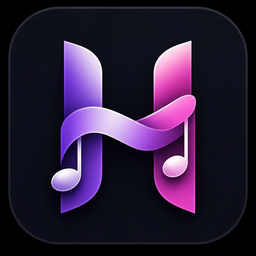

01
Scales & chords
Build your playground.
Choose a root and a mode, then immediately see the notes, diatonic chords and keyboard come alive. A clear foundation for composing with confidence.

HarmoTools e-naxos.comThe workspace for curious musicians
OD HarmoTools makes scales, chords and keys immediately playable, visible and connected.
Full version, not a demo. Available for unrestricted use; voluntary donations support ongoing development.
One tool, one instinct
HarmoTools brings the essential landmarks of harmony into a calm, precise and unmistakably musical interface.
Harmony, tuning and rhythm in one workspace
Scales & chords
Choose a root and a mode, then immediately see the notes, diatonic chords and keyboard come alive. A clear foundation for composing with confidence.
Scale finder
Select your notes, let HarmoTools reveal candidate scales and open the ones that deserve your ear.
Scales & Chords · Scale Finder
Both tools share the same scale library: 52 distinct public scale definitions, including 48 in the full recognition catalogue.
Major, natural minor, harmonic minor, ascending melodic minor.
Ionian, Dorian, Phrygian, Lydian, Mixolydian, Aeolian, Locrian.
Modes 1 to 7.
Modes 1 to 7.
Major, minor.
Whole tone, octatonic whole-half, octatonic half-whole, augmented.
Minor blues, major blues, bebop dominant, bebop major, bebop Dorian.
Harmonic major, double harmonic major, Hungarian minor, Ukrainian Dorian, Neapolitan major, Neapolitan minor.
Persian, Arabic, Spanish Phrygian, Oriental, Egyptian.
Hirajoshi, Insen, Iwato, Yo, Kumoi.
Chord name
Enter a chord and inspect its material: notes, keyboard voicing and harmonic identity. Perfect for checking an instinct or enriching a progression.
Chord finder
The keyboard becomes a harmony detector: possible names, inversions and spellings appear clearly to speed up your analysis.
Circle of fifths
See key signatures, relative minors and degrees at a glance. Click, listen and change mode, then open the collapsible side panel to build a chord progression directly from the circle.
Pitch CV settings
Choose the Hz/V or V/Oct pitch CV standard, set the voltage assigned to C4 and adjust the A4 tuning reference. The conversions then follow your synthesizer’s pitch settings.
Frequencies & volts
Convert a note into its frequency and pitch control voltage, or find the nearest note from a frequency or voltage. Read the tuning offset in hertz and cents using your chosen CV settings.
Reference tone
Play a reference tone from the selected or nearest note to tune a synthesizer or VCO by ear. Choose the waveform and volume, then apply a new target when you are ready to change the reference pitch.
Ranges
Compare frequency ranges and instrumental tessituras to write with greater accuracy, from the lowest notes to the highest.
Memories · Favourite scales
Keep the worlds that inspire you and return to them in one move. Your workspace organises itself around your own tonal palette.
MIDI export
Export chord progressions and Random Sequencer patterns as Standard MIDI Files (format 0), then simply drag and drop them into your DAW to continue developing your ideas there.
Random sequencer
Create evolving patterns from 4 to 64 steps. Use any scale or a custom selection of notes entered with the mouse or a MIDI keyboard, store up to six sequences, then export them as MIDI files for your DAW.
Digital metronome
Set the tempo in BPM or use Tap Tempo, follow the visual pulse and choose the beat accent, sound and volume. A reference for practising, rehearsing or checking a rhythmic idea.
Audio analyzer · Pitch detection
Analyze one note at a time from a microphone, USB microphone or ASIO audio interface. Read its measured frequency, note name and tuning offset in cents from the nearest in-tune note, using an adjustable A4 reference.
Audio analyzer · Spectrum
Inspect the frequency spectrum in Hz and dBFS, with the detected fundamental marked on the graph. See the harmonics and freeze the spectrum to examine a stable measurement.
Chord sequencer
Save your chords, set tempo, gate, strum and instrument. Then hear the progression breathe before taking it further.
Audio settings
Choose your SoundFont, audio output and preview settings. HarmoTools adapts to your studio, never the other way around.
MIDI & diagnostics
Connect a MIDI keyboard, monitor activity and stay in control of the setup. A direct bridge from your fingers to your ideas.
About & help
The manual travels with the application, so every feature stays approachable — from the first scale to your next progression.
A natural flow
Start with the circle, a scale or a handful of notes.
Move through chords, notes and colours.
Save, sequence and play your discoveries.
Download & support
OD HarmoTools is DonationWare: the complete version is available for unrestricted use, and donations from the people who find it useful sustain its development.
Download the full versionThe latest version — always up to date.
OD HarmoTools
A toolbox designed to keep your ear at the centre of every decision.
Back to the top